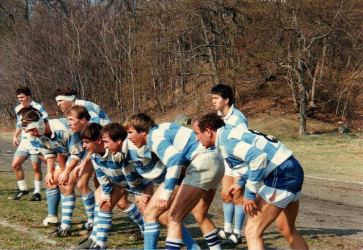
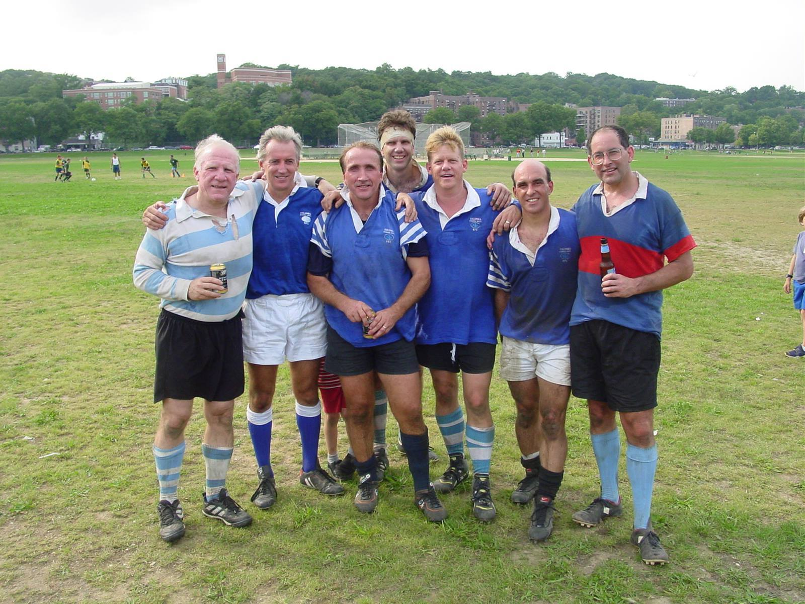

THE LEGACY LIVES ON
BOOTS ON THE SHELF
Over 500 CBS RFC alumni have carried the values of rugby into careers worldwide — and the alumni are an integral part of the CBS RFC family. Every year, we connect with our graduates to network, compete, and throw back a few cold ones.
Membership in the CBS RFC Alumni network is more than just nostalgia; it's about a lifelong commitment to being part of this great club. We leverage our network to mentor current players and drive success for our brothers and sisters in their post-MBA careers.
ALUMNI PROFILES

THE ANNUAL ALUMNI GAME

THE ALUMNI MATCH
The CBS RFC Alumni Match traces its roots to the fall of 1987, when former players first returned to the pitch to take on the current squad. For the next fifteen years, two matches were played each year, with alumni fielding a competitive side that also faced off against clubs like NYAC, Harvard Alumni, and other professional school and Division II teams. Jeff Calnan began this tradition and led the Alumni side for decades before Eric Puleio took the reins in 2012, carrying forward a legacy that has brought generations of CBS RFC players back to the pitch.
KEEP THE LEGACY GOING
Alumni of CBS RFC? Fill out our alumni form to stay connected with the club.
ALUMNI FORM